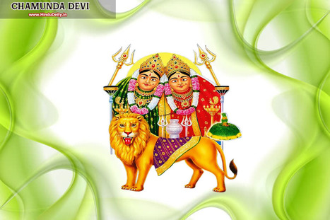

|
 |
ગણિકાએ જવાબ આપ્યો, 'હું દેવની પુત્રી છું; હું સ્વર્ગમાં ધાર્મિક તપસ્યા કરતો હતો. હું હવે આ જંગલમાં આવી ગયો છું.' ભક્તે કહ્યું ફરી, 'તારી ઝૂંપડી ક્યાં છે? મને બતાવો.' ત્યારપછી ગણિકા તપસ્વીને તેની ઝૂંપડીમાં લાવી, અને તેને સ્વાદિષ્ટ ખોરાક આપવાનું શરૂ કર્યું. છ-સ્વાદવાળી) વાંદડીઓ, જેથી સંન્યાસીએ ધુમાડો શ્વાસમાં લેવાનું છોડી દીધું, અને દરરોજ ખોરાક અને પીવાનું પાણી ખાવાનું શરૂ કર્યું. આખરે કામદેવે તેને બમણો કર્યો; જેના પર તેણે તેની સાથે દૈહિક સંભોગ કર્યો, (અને; તેની તપસ્યા કરી; અને ગણિકા ગર્ભવતી થઈ. દસ મહિનામાં એક છોકરો થયો. જ્યારે તે કેટલાક મહિનાનો હતો, ત્યારે સ્ત્રીએ ભક્તને કહ્યું, 'હે સંત! હવે એક તીર્થયાત્રા પર નીકળું છું જેના દ્વારા દેહના તમામ પાપો નષ્ટ થઈ શકે છે.' આવા શબ્દોથી તેને ભ્રમિત કરીને, તેણીએ છોકરાને તેના ખભા પર બેસાડ્યો, અને આ બાબતને પૂર્ણ કરવા માટે ગેજ હાથમાં લીધા પછી, તે રાજાના દરબારમાં જવા લાગી. જ્યારે તે રાજાની સમક્ષ આવી, ત્યારે મહારાજે તેને દૂરથી ઓળખી લીધો અને ભક્તના ખભા પર બાળકને જોઈને દરબારીઓને કહેવા લાગ્યા, 'જરા જુઓ! આ એ જ ગણિકા છે જે ભક્તને લાવવા ગઈ હતી!' તેઓએ જવાબ આપ્યો, 'હે રાજા! તમે એકદમ સાચા છો; આ ખૂબ જ સમાન છે; અને તે જોઈને પ્રસન્ન થાઓ કે તેણીએ અહીં તમારા મહિમાની હાજરીમાં જે કહ્યું હતું તે બધું પૂર્ણ થયું છે.' "જ્યારે તપસ્વીએ રાજા અને દરબારીઓની આ ટીપ્પણીઓ સાંભળી, ત્યારે તેને સમજાયું કે રાજાએ તેના પ્રદેશોના ધ્યાનને ખલેલ પહોંચાડવા માટે આ ઉપાયો અપનાવ્યા છે. તેના મનમાં આ વિચારો સાથે, ભક્ત ત્યાંથી પાછો ફર્યો, અને શહેરની બહાર નીકળીને, તેને મારી નાખ્યો. બાળક, બીજા જંગલમાં રીપેર કરાવી, અને તપસ્યા કરવા લાગ્યો. અને થોડા સમય પછી તે રાજા મૃત્યુ પામ્યો, અને ભક્તે તેની તપસ્યા પૂર્ણ કરી." વાર્તાની ટૂંકી વાત એ છે કે તમે ત્રણ માણસો એક જ તારકવાદ હેઠળ, એક જોડાણ હેઠળ અને એક જ ક્ષણમાં જન્મ્યા છો. તમારો જન્મ રાજાના ઘરે થયો છે; બીજો એક તેલવાળા (બાળક); ત્રીજો, ભક્ત, કુંભારના ઘરમાં જન્મ્યો હતો. તમે અહીં શાસન કરો છો, જ્યારે તેલવાળાનો પુત્ર શાસક હતો. શેતાની પ્રદેશો; પરંતુ તે કુંભાર, તેના ધાર્મિક ધ્યાનને સંપૂર્ણ પૂર્ણતામાં લાવીને, તેલવાળાને મારી નાખ્યો, તેને સળગતી જમીનમાં રાક્ષસમાં ફેરવ્યો અને તેને સાડી-વૃક્ષ પર માથું નીચે લટકાવી દીધું, અને તે તમને મારવા માંગે છે. જો તમે તેનાથી છટકી જાઓ છો, તો તમે શાસન કરશો. મેં તમને આ બધા સંજોગોથી માહિતગાર કર્યા છે; તેમના પ્રત્યે બેદરકાર ન થાઓ." આટલું બધું કહીને, રાક્ષસ ચાલ્યો ગયો. તે (રાજા) તેના ખાનગી મહેલમાં દાખલ થયો. જ્યારે સવાર થઈ ત્યારે રાજા બહાર આવ્યો, અને તેની બેઠક (સિંહાસન પર) લીધી, અને સામાન્ય દરબાર માટે આદેશ આપ્યો. જેટલા સેવકો હતા, નાના-મોટા, બધાએ આવીને હાજરીમાં પોતપોતાના અર્પણ કર્યા, અને ઉત્સવનું સંગીત ગુંજી ઉઠ્યું. આખા શહેરમાં એક અસાધારણ આનંદ અને આનંદ છવાઈ ગયો, દરેક જગ્યાએ અને દરેક ઘરમાં, નૃત્ય અને ગીત ઉભરી આવ્યા. આ પછી રાજા ન્યાયથી શાસન કરવા લાગ્યા.તે સંબંધિત છે કે એક દિવસ શાંતશીલ નામનો એક તપસ્વી રાજાના દરબારમાં સાથે હાજર થયો. તેના હાથમાં એક ફળ, અને, તે ફળ રાજાને આપીને, એક કપડું ફેલાવી, અને ત્યાં બેઠો. થોડા સમય પછી તે ફરી ગયો. વિદાય વખતે રાજાએ મનમાં વિચાર્યું કે આ કદાચ કોની વ્યક્તિ છે રાક્ષસ બોલ્યો. આ શંકાને ધ્યાનમાં રાખીને, તેણે ફળ ખાધું ન હતું, અને, કારભારીને બોલાવીને, તેણે તેને કાળજીપૂર્વક રાખવાની સૂચનાઓ સાથે તેને આપ્યું. જો કે, ભક્ત આ જ રીતે સતત આવતો હતો, અને દરરોજ એક ફળ છોડતો હતો. એવું બન્યું કે એક દિવસ રાજા તેના તબેલાનું નિરીક્ષણ કરવા ગયો, તેની સાથે કેટલાક સેવકો પણ હતા. તે દરમિયાન સંન્યાસી પણ ત્યાં પહોંચ્યા અને રાજાને સામાન્ય રીતે ફળ અર્પણ કર્યું. તેણે તેને હવામાં ઉછાળવાનું શરૂ કર્યું, જ્યારે તે અચાનક તેના હાથમાંથી જમીન પર પડી, ત્યારે એક વાંદરાએ તેને ઉપાડ્યો અને તેના ટુકડા કરી નાખ્યા. તેમાંથી એટલો ઉત્કૃષ્ટ રુબી નીકળ્યો કે તેની ચમક જોઈને રાજા અને તેના સેવકો આશ્ચર્યચકિત થઈ ગયા. ત્યારે રાજાએ ભક્તને કહ્યું, "તેં મને આ માણેક શા માટે આપ્યો?" આના પર તેણે કહ્યું, “હે મહાન રાજા! શાસ્ત્રમાં લખ્યું છે કે નીચેની જગ્યાઓ એટલે કે રાજાઓ, આધ્યાત્મિક સ્થળોએ ખાલી હાથે ન જવું જોઈએ. શિક્ષકો, જ્યોતિષીઓ, ચિકિત્સકો અને પુત્રીઓ, કારણ કે આ સ્થાનો પર વ્યક્તિ લાભ માટે લાભ મેળવે છે. સાહેબ! તમે એક જ રૂબીની વાત કેમ કરો છો? મેં તને જેટલાં ફળ આપ્યાં છે, તેમાંના દરેકમાં એક-એક રત્ન છે.” આ શબ્દો સાંભળીને રાજાએ કારભારીને કહ્યું કે તેણે આપેલાં બધાં ફળો લઈ આવો. રાજાનો આદેશ મળતાં કારભારી તરત જ તેમને લઈ આવ્યો; અને, ફળો તોડી નાખ્યા પછી, તેને દરેકમાં એક રુબી મળી. જ્યારે તેણે આટલા બધા માણેક જોયા, ત્યારે રાજા અતિશય ખુશ થયો, અને, કિંમતી પથ્થરોના પરીક્ષકને બોલાવીને, માણેકનું પરીક્ષણ કરવાનું શરૂ કર્યું, અને કહ્યું, "કંઈ નહીં. એક સાથે (આ દુનિયામાંથી); અખંડિતતા વિશ્વમાં સૌથી મહત્વપૂર્ણ છે; તેથી, દરેક રત્નનું ચોક્કસ મૂલ્ય મને પ્રમાણિકપણે કહો." |
| પેજ નંબર ૩ | ||